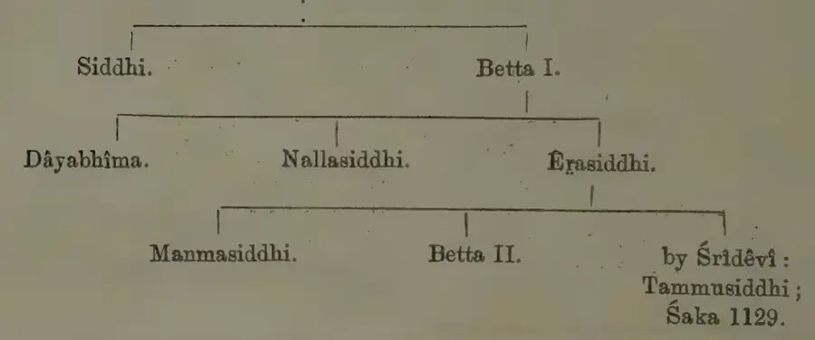

Two inscriptions of Tammusiddhi ; Śaka-Saṅvat 1129
TWO INSCRIPTIONS OF TAMMUSIDDHI;
SAKA-SAMVAT 1129.
SAKA-SAMVAT 1129.
By H. LÜDERS, PH.D.; GÖTTINGEN.
The first of the following two stone inscriptions is engraved on the east wall of the Naṭarája shrine in the Vaṭāraṇyéśvara temple at Tiruvālaṅgādu, 3 miles N.-N.-E. of the Chinnamapêt Railway Station in the North Arcot district. The second is on the north wall of the central shrine of the Vāchiśvara temple at Tiruppāsūr, 2 miles W.-S.-W. of Tiruva||ūr in the Tiruva||ūr táluka of the Chingleput district. They are now edited for the first time from inked estampages supplied to me by Dr. Hultzsch.3
1 A. Grünwedel, Buddhistische Kunst in Indien, sec. ed. (1900), p. 138.
2 See Professor Pischel's Grammatik der Prakrit-Sprachen (1900), p. 24.
3 Nos. 408 and 407 of the Government Epigraphist's collection for the year 1896.
Both of them are intended to commemorate the donations of a king Tammusiddhi or Tammusiddha, who belongs to a family of Telugu chiefs of whom numerous records have been discovered since 1892 in the Chingleput, North Arcot, Nellore and Kistna districts. On these materials Mr. Venkayya has based his valuable account of the Chôðas of the Telugu country in the Annual Report for 1899-1900. However, as none of the inscriptions made use of by Mr. Venkayya have been published until now, I shall confine my remarks to the facts furnished by the following two inscriptions alone.
The Tiruvâlangâdu inscription is damaged in a few places, but the illegible passages can easily be restored, partly from the context alone, and partly with the help of the Tiruppâsûr inscription. It is written in Grantha characters. The size of the letters varies from to 2". Line 8 contains the rare subscript sign for jha in nirjjharâ. The language is Sanskrit, and, with the exception of the concluding words svasty=astu, the whole text is in verse. As regards orthography, it may be pointed out here that in the middle of a word t is written instead of d before a sonant consonant in the word patma in ll. 1, 2, 3, and in bhavatbhîr in l. 21.
After two introductory verses in praise of the donor, who, as stated above, is called both Tammusiddhi (ll. 2, 17, 18) and Tammusiddha (ll. 1, 20, 21), the inscription gives his genealogy, which shows the characteristic features of the Chôla genealogies.
It begins with some mythical ancestors. From the lotus of Vishnu's navel sprang Brahman (vv. 3, 4), from him Marîchi, from him Kaśyapa (v. 5), from him the Sun (v. 6), and from him Manu (v. 7), in whose family there were born many kings (v. 8). This is the genealogy of the solar race as taught in the Purânas.1 It is found also in the Udayêndiram plates of Prithivîpati II.2 and those of Vîra-Chôla,3 as well as in the Kalingattu-Parañi4 and the Vikkirama-Šôlaṇ-Ulâ;5 but in the last three passages the third name appears as Kâśyapa or Kâchchipaṇ instead of Kaśyapa. The Vikkirama-Šôlaṇ-Ulâ differs besides in placing Kâśyapa before Marîchi, and the Udayêndiram plates of Prithivîpati II. omit Manu.
The inscription next mentions three kings who form the connecting link between those sages of old and the direct ancestors of Tammusiddhi. The first of them, born in the lineage of Manu, is Kalikâla (v. 9). Kalikâla is identical, of course, with the ancient half-mythical Chôla king whose name is generally given as Karikâla. The various traditions about him have been collected by Dr. Hultzsch.6 In the present inscription we are told that he constructed the banks of the Kâvêrî, and that, when he had lifted Mount Mêru with his play-staff, the quarters were greatly disturbed or confounded. The story about the construction of the banks of the Poññi or Kâvêrî is alluded to also in the Kalingattu-Parañi,7 the Vikkirama-Šôlaṇ-Ulâ,8 and the large Leyden grant.9 The second legend, implied by the words of the inscription, is not known to me, but it is probably connected in some way with another legend recorded by the two Tamil poems. According to the Kalingattu-Parañi Karikâla inscribed on the side of Mount Mêru the whole history of the Tamil race as foretold by the Rishi Nârada, and in the Vikkirama-Šôlaṇ-Ulâ he is spoken of as "the king who set his tiger-banner on the mountain whose summit gleams with crystal waterfalls," where the mountain meant by the poet would seem to be again Mount Mêru.
1 See, e.g., Agnipurâna, 5, 2:—
Vishnundâbhyabjajô Brahmâ Marîchir=Brahmaṇaḥ sutaḥ |
Marîchêḥ Kaśyapas=tasmât Sûryô Vaivasvatô Manuḥ ||
Compare also 272, 1 f.; Râmâyaṇa, 1, 70, 19 f.; 2, 110, 5 f.
2 South-Ind. Inscr. Vol. II. p. 882.
3 Above, Vol. III. p. 80 f.
4 Canto 8, vv. 9, 10; Ind. Ant. Vol. XIX. pp. 330, 340.
5 Ind. Ant. Vol. XXII. pp. 144, 147 f. Manu is not mentioned here by name, but alluded to as "the stern sire who drove his chariot over his son to soothe a cow in dire distress."
6 South-Ind. Inscr. Vol. II. p. 377 f.
7 Canto 8, v. 20; loc. cit. pp. 331, 341.
8 Loc. cit. pp. 144, 148.
9 Archæological Survey of Southern India, Vol. IV. p. 206.
The verses 10 and 11 are devoted to a king who is said to have been born in the lineage of Kalikâla, and to have had two names,—Madhurântaka, i.e. ‘the death to Madhurâ,’ and Pottapi-Chôla. The former name he acquired by conquering Madhurâ, the capital of the Pândyas, whose women he made widows; the latter was given to him for having founded, in the country of the Andhras, the town of Pottapi. Madhurântaka Pottapi-Chôla is a name frequently met with as that of a local chief in the inscriptions at Conjeeveram, the ancient Kâñchîpura; in the list compiled by Mr. Sewell1 it occurs more than thirty times. Provided, however, that all these inscriptions are to be referred to the same person, it is impossible that that chief of Kâñchîpura should be identical with the ancestor of Tammusiddhi; for one of his inscriptions is dated in the 18th,2 and another in the 21st year of Tribhuvanachakravartin Râjarâjadêva,3 which correspond to A.D. 1233-34 and 1236-37, respectively. He must have been a much younger member of the family, and Mr. Venkayya, for other reasons, is inclined to identify him with Chôla-Tikka, who probably was the successor of Tammusiddhi.4 The identification of Pottapi, which Madhurântaka Pottapi-Chôla is said to have founded, must be left to future researches.5
In Madhurântaka Pottapi-Chôla's race was born Tilungavidya (v. 12). The only feat recorded of him is the erection of a pillar of victory with a figure of Garuđa at the top of it at Ujyapuri.6 Ujyapurî may be the modern Üjîpuram or Ujjapuram, 18 miles east-south-east of Kollêgâl in the Coimbatore district. Mr. Sewell states that there is an old ruined fort at that place,7 and there is no difficulty in assuming that one of these Telugu Chôlas should have extended his conquests beyond the Kâvêrî, if another boasts even to have taken Madhurâ.
With verse 13 begins a coherent genealogy of the direct ancestors of Tammusiddhi. In Tilungavidya's family was born king Siddhi (v. 13). His younger brother was Betta (I.), who had several sons (v. 14), the eldest of whom was Dâyabhîma (v. 15). Dâyabhîma's younger brother was Êrasiddhi (v. 16). He again had three sons, Manmasiddhi or Manmasiddha, Betta (II.), and Tammusiddhi, whose mother bore the name of Śridêvi (vv. 17-20). Of these only Siddhi, Dâyabhîma and Manmasiddhi are described in terms implying that they actually reigned, while of Betta II. it is expressly stated that, being given to the practice of austerities, he conferred, after the death of Manmasiddhi, the government on his younger brother Tammusiddhi.
In verse 21 we are informed that in the Śaka year 1129 (=A.D. 1207-8) Tammusiddhi allotted to the lord of Vatâtavi all the revenues due to the king in the villages belonging to the temple. The inviolability of this order is enjoined in the two concluding verses (22, 23). As regards the name of the god, it is apparently derived from that of the village where the temple is situated, Vatâtavi or its modern synonym Vatâranya being Sanskrit renderings of the Tamil Tiruvâlangâdu, ‘the holy banyan forest.’
The Tiruppâsûr inscription closely resembles the Tiruvâlangâdu inscription in outward appearance as well as in its contents. It is written in Grantha characters, about 1 1/4" high. The form of the subscript jha in nirjjharâ in l. 19 slightly differs from that of the Tiruvâlangâdu inscription, the loop to the left having disappeared here altogether. The initial ê also has a
1 Lists of Antiquities, Vol. I. p. 178 ff.
2 No. 37 of the Government Epigraphist's collection for 1893.
3 Lists of Antiquities, Vol. I. p. 187 (No. 277). Mr. Sewell mentions also an inscription (No. 74) dated "in Śaka-Samvat 1232, in the 24th year of his reign."
4 Loc. cit. p. 19. In the genealogical table, ibid. p. 18, Mr. Venkayya mentions a certain Madhurântaka Pottapi-Chôdasiddhi who belonged to another branch of the Telugu Chôlas. But he also cannot possibly be the person of that name in the present inscription, as he is represented as a descendant of Telungabijjana, whereas the Madhurântaka Pottapi-Chôla of our inscription was an ancestor of that king.
5 [See South-Ind. Inscr. Vol. III. p. 33, note 1. The Postal Directory of the Madras Circle mentions a village "Potapi" near "Tongootoor" in the Pullampêt tâluka of the Cuddapah district.—E. H.]
6 Or, possibly, Üjyapurî. The quantity of the initial vowel cannot be made out from the text, as it is united here with the final vowel of the preceding word (yên=Ójyapuryydm).
7 Lists of Antiquities, Vol. I. p. 215.
very peculiar form in l. 61, whereas in l. 11 it appears in the usual shape. The language is Sanskrit, and the whole is in verse, with the exception of the words svasty=astu at the end. Here also a surd consonant is written instead of a sonant in patma (ll. 2, 3, 4) and bhavatbhir (l. 64), and besides in drikbhyâm (l. 4) and dik dakshiṇâ (l. 35).
Of the 23 verses of the Tiruvâlangâdu inscription 16 reappear in this inscription, occasionally with slight variations.1 With respect to the earlier part of the genealogy (vv. 2-9) it is to be noticed that the verses about Manu and Tiluñgavidya are omitted here. That portion also which deals with the direct line of Tammusiddhi's ancestors (vv. 10-17) shows one important point of difference. No mention is made of Betta I. and of Dâyabhîma. Instead of the two verses devoted to them in the Tiruvâlangâdu inscription we find here a verse (11) stating that in king Siddhi's family was born king Nallasiddhi. In the following verse Êṇasiddhi is called his younger brother, which term in the identical verse 16 of the Tiruvâlangâdu inscription applies to Dâyabhîma spoken of in the preceding verse, and it might therefore easily be imagined that Dâyabhîma and Nallasiddhi were only different names of the same king. Fortunately, an inscription at Tiruvoṇriyûr,2 quoted by Dr. Hultzsch in his Annual Report for 1893, paragraph 13, leaves no doubt that they were two distinct persons, and the pedigree to be derived from the two inscriptions edited here is thus to be arranged in the following manner :3—
Kalikâla.
Madhurântaka Pottapi-Chôla.
Tiluñgavidya.

Besides the name of Nallasiddhi the Tiruppâsûr inscription contains little that is new. Nallasiddhi seems to have taken possession of Kâñchi or Conjeeveram; for in verse 11 it is said, with a well-known pun, that, when the southern quarter had obtained him as her husband, she was galîta-kâñchi-guṇâ, which may be understood as 'having dropped her girdle' or 'having lost Kâñchi.' In verse 15 we are told once more, but in a more explicit way, that after the death of Manmasiddhi the government passed without any disturbances into the hands of Tammusiddhi, Betta II. being of a religious turn of mind and therefore renouncing his claims to the throne in favour of his younger brother.
The verses 18 and 19 record that in the Śaka year 1129 (=A.D. 1207-8) Tammusiddhi allotted to the lord of Pâśipura the revenues due to the king in the villages belonging to the
1 The name of the town founded by Madhurântaka Pottapi-Chôla is here spelled Pottappi (v. 9).
2 No. 104 of the Government Epigraphist's collection for the year 1892.
3 The purely fictitious first portion has been omitted here.
temple, and that in the same year he presented the village of Kaivaṇtūr to the god. Pâsipura, of course, is nothing but the Sanskṛit name of Tiruppâsûr. The village of Kaivaṇtūr, as Dr. Hultzsch informs me, is identical with Kaivaṇdūr,1 1 mile W.-N.-W. of Tiruppâsûr.
A.—TIRUVALANGADU INSCRIPTION.
TEXT.2
- 1 Svasti śrī-Tammusiddhâya tasmai yat-sainya-rênava[ħ] [|*] [Brahma-pa]tma(dma)-spriśas̄=śaṁkê bhâvi-bhû-sprishṭi-hêtavaħ || [1*] Jayati vijayi-châpaħ kshâlit-â[sê]sha-[pâpa]s=satata-madhura-lâ-
- 2 paħ prâpta-vidyâ-kalâpaħ [|*] vitata-vitaraṇ-âpas̄=śatru-mâyâ-durâpaħ pra[śamita]-kali-tâpas=Tammusiddhi-kshamâpaħ || [2*] Udadhi-śayana-bhâjaħ Patma(dma)-nâbhasya nâbhêħ kim=api nikhila-hêtur=jjâtam=âścha-
- 3 ryya-patma(dma)m [|*] yad=abhajad=api sprishṭêħ pûrvvam=êtasya drigbhyâ[m=mṛidu-kaṭhina-ma]hôbhyâm=mîlan-ônmîlanâni || [3*] Tasmâd=Viriñchir=abhavat suchiran=tad-a-
- 4 ntar=vvâsâd=iva prakaṭayann=rajasaħ pra[vṛittim] [|*] ya[ħ*] Śrîśa-ta[lpa-phaṇi-mauli]-maṇi-prarûđha-bimbas=srijann=iva babhau sadrîśas=sahâyânh3 || [4*]
- 5 Marîchir=udagât=tasmâd=uday-âdrêr=iv=âmśumân [|*] [tataħ] Kasyapa êtasmât prakâśa iva nirggataħ4 || [5*] Asmâj=ja[gat*]-trita[ya-maingala-rat]nadîpas̄=chhanda-
- 6 s-tanus=timira-kânana-dâvavahniħ [|*] di[k*]-kâlayôħ kim=aparaṁ vyavahâ[ra*]-hêtu[ħ] kô=py=âvirâsa vasudhâdhipa-vaṁśa-kandaħ [|| 6*] Tasmâd=idam prathama-sambhṛita-râja-śa-
- 7 bdaħ pûrnṇô guṇair=nnikhila-nîti-patha-prayôktâ [|*] dêvô Manus=sapadi gôptum=iv=âvatîrṇnas=tan-maṇdal-ânta[ra*]-gata[ħ p]urushaħ purâṇah [|| 7*] Babhû-
- 8 vur-ullâsita-kîrtti-nirjjharâ Manôħ kulê=smin bahavaħ kshamâbhṛitah [|*] divas-prithivyôr=api yair=nniyantribhir=nniraṁkusô nîti-pathah5 pravarttita[ħ] [|| 8*]
- 9 Tat-kulê Kalikâlôlô=bhût6 [Kâvêri-tîra-kṛin=nripah] [|*] [yat-kê]lî-yashṭi-tulitê Mêrau vyatikṛitâ diśah [|| 9*] Jâtô=sya varṁsê Madhurâm viji-
- 10 tya paśchâd=udañchana(n-Ma)dhurântak-âkhyaħ [|*] nitânta-mukt-âbha[ra*]nâħ prachaṇdaħ Pâṇdy-âinganâħ prâg=iva yas̄=chakâra || [10*] Jishṇur=Andhrêshu yaħ kṛitvâ purîm Pottapi-samñjitâm7 [|*]
- 11 tatas=tat-pûrvva-[Chô][|*]-âkhyah8 prakhyâta-bhuja-vikramah || [11*] Tad-vaṁsê sa Tilumgavidya-nripatir=yyên=Ôjyapuryyâm=asau chañchata(t)-kîrtti-patâkayâ tilakita-stambhah pratishṭhâpi-
- 12 taħ [|*] yasy=âgrê Garuđan=nirîkshya sahaja-snêhêna sûtê sthitê maddhyê-vyô[ma] vilambatê dinapatiħ prâyas=tad-âdi kshaṇam || [12*] Tat-kulê Siddhi-bhûpâlaħ pâlayâm=â-
- 13 sa mêdinîm [|*] yadîya-dôħ-pad-âyattam=artthi-pratyartthi-jîvitam || [13*] Anujanm=âbhavat=tasya Betta-bhûpaħ pratâpavân [|*] tasy=âpi jajñirê putrâs=trâtâras̄=śaraṇ-ârtthinâm || [14*] Dâyabhîmô n[ṛipa]-
- 14 s=têshâ[rî] jyêshṭhaħ kshônîm=apâlayat [|*] yat-pâpis̄=sâtrava-śrîpân=kês-âkrishṭi-kash[â*]yitaħ || [15*] Tasy=Airasiddhi-nripatis=sahajaħ kanîyân=dûran=nirasya kalim=asya punah-pravêśam [|*] rôddhum pravṛi[t]ta
1 No. 63 on the Madras Survey Map of the Tiruvallûr tâluka.
2 From inked estampages supplied by Dr. Hultzsch. 3 Read =sahâydn.
4 The sign for rgga looks rather strange, but it cannot possibly be meant for anything else.
5 The visarga has been added below the line. 6 Read Kalikdô=bhât.
7 Read =sahjûitâm.
8 The chô has been added below the line.
15 iva yah prachuram yaśa[h*] sva[n*]=dik-sīmasu sphaṭika-sāla-nibha[m babandha ||]
[16*] [A]sy=âbhavann=avani-maṇḍala-rakshitāraḥ putrâs=traya[h*] sphurita-paurusha-bhûshaṇâs=tê [|*] yair=anvitaḥ prasavitâ suchiram vyarâjat=têjô-
16 mayair=iva n[i*]jair=nnayanais=Triṇêtraḥ [|| 17*] Jyây[ân=êshâm]=Manmasiddh-îśvaraḥ kshmâm kshâr-âmbhôdhi-śyâma-sīmâ[m] śasâsa [|*] nity-ôdañchad-yad-yaśaḥ-pañjar-ântar=vyyôma dhyâmam kôkila-
17 tvam bibhartti || [18*] Tatra svar-llôkam=ârûḍhê madhyamô Be[tta-bhû]patiḥ [|*] tapasvî râjyam=âdhatta Tammusiddhau kanîyasi [|| 19*] Sa Śridêvyâm=Êṣasiddhi-kshitîśâ[j*]=jâta[h*] śrîmân=Manmasiddh-ânujanmâ [|*] dhâtrîm=ê-
18 tân=drâ(trâ)yamâṇas=samastâm=ast-ârâtis=Tammusiddhi-kshamâpaḥ || [20*] Asmai Vaṭâṭavisâya Śak-âbdê dhira-
19 yâyini [|*] grâmêshv=asya nṛipa-grâhyam prâdâd=âyam=asêshataḥ || [21*] Êtat kshôpîbhṛitâm=ainśu-jatâ-
20 lair=mmakuṭair=dhṛitam [|*] jaga[t*]-traya-prasiddhasya Tammusiddhasya śâsanam ||1
[22*] Yatnêna dharmma-saraṇiḥ pariraksha-
21 ṇiyâ s=êyam bhavatbhi(dbhi)r=akhilair=iti Tammusiddhaḥ [|*] âgâminaḥ praṇayatê nṛipatîn=ajasran=dûran=natêna śira-
22 sâ na śarâ-
23 sanêna || [23*]
24 Svasty=astu [||*]
TRANSLATION.
(Verse 1.) Hail to that glorious Tammusiddha, the dust of whose troops, which touches the lotus of Brahman, (will be) the cause, I imagine, of creating the future world!
(V. 2.) Triumphant is king Tammusiddhi, whose bow is victorious, who has washed off all sins, whose talk is always sweet, who has acquired the whole range of sciences, who has poured out the water of donation, who is difficult to be overcome by the tricks of (his) enemies, (and) who has appealed the torments of the Kali (age).
(V. 3.) From the navel of Padmanâbha2 reposing on the waters sprang a certain wonderful lotus, the cause of all things, which, on account of his (Vishṇu's) eyes emitting light now soft, now fierce,3 used to close and to open even before the creation.
(V. 4.) From this (lotus) sprang Viriñchi,4 who, manifesting, as it were, the action of rajas5 because (he) dwelt long in its interior, seemed to create companions similar (to himself), when his image was reflected by the crest-jewels of the snake (which formed) the couch of the husband of Śrî.6
(V. 5.) From him rose Marîchi as the sun from the eastern mountain. From him (again) went forth Kaśyapa as the light from that (sun).
1 After this stands a sign much like the sign for medial e; and though it would be possible to read yetnêna, I think that it is intended to mark the end of the proper grant, as the spiral is used in Kanarese inscriptions.
2 I.e. Vishṇu.
3 [Vishṇu's right eye is the sun, and his left eye the moon; compare above, Vol. III. No. 34, verse 3.—E.H.]
4 I.e. Brahman.
5 The word rajas must be understood here in its double sense of 'pollen' and 'energy,' the latter being the quality predominant in Brahman, especially at the time of creation; compare the introductory stanza of Bâṇa's Kâdambari.
6 I.e. Vishṇu.
(V. 6.) From him originated a certain bulb (which was the origin) of a race1 of kings, the auspicious jewel-lamp to the three worlds, the body of which is the Vêda,2 which was a fire destroying the forest of darkness, the cause, moreover, of fixing quarters and times.
(V. 7.) The divine Manu quickly descended from thence, he who first acquired the title of king, who had plenty of virtues, (and) who composed all the rules of policy, in order to rule this (world), like the primeval spirit (Vishpu) who resides in the orb of that (sun).
(V. 8.) In this family of Manu were many kings who made their fame rush along like torrents,3 rulers even of heaven and earth who laid down the principles of (just) policy without opposition.
(V. 9.) In that family was king Kalikâla who constructed the banks of the Kâvêri. When (he) had lifted Mount Mêru with his play-staff, the quarters were greatly disturbed.
(V. 10.) In his race was born he who, after his conquest of Madhurâ getting renowned by the name of Madhurântaka, cruelly caused the Pândya women to take off completely their ornaments (so that they were) as before (when they had been wearing fine pearl ornaments);4
(V. 11.) Who, crowned with victory (and) famous for the strength of (his) arm, after having founded in (the country of) the Andhras the town called Pottapi, bore the title of Chôla preceded by that (name).
(V. 12.) In his race (was) that king Tilungavidya who erected the famous pillar adorned with a waving banner of fame at Ujyapuri; I am sure, it is since that time that the sun tarries for a moment in the midst of the sky,5(his) charioteer6 stopping out of brotherly affection, when he perceives the Garuđa at the top of that (column).
(V. 13.) (Born) in his family, king Siddhi ruled the earth, on whose arms and on whose feet depended the life of his clients and that of his enemies (respectively).
(V. 14.) His younger brother was the mighty king Betta. To him also were born sons who defended those who asked them for protection.
(V. 15.) The eldest of them, king Dâyabhima, whose hand was reddened by pulling the hair of the goddesses of royal fortune belonging to (his) enemies, ruled the earth.
(V. 16.) His younger brother (was) king Érasiddhi, who, having driven far away the Kali (age), determined, as it were, to prevent its return, piled up his abundant fame like a wall of crystal at the ends of the quarters.
(V. 17.) He had three sons, rulers of the globe, (attired) with the brilliant jewel of heroism. Attended by them who were full of energy, the father shone for along time like Tripêtra7 with his beaming (three) eyes.
(V. 18.) The eldest of those, the lord Manmasiddhi, ruled the earth, the dark-blue limits of which were the briny ocean. The dark-blue sky became a cuckoo in the cage (which was) his continually rising fame.
1 Or 'a cane.' The sun from which the solar dynasty descends is compared to a bulb with a sprouting shoot.
2 With ekhandas-tanuh compare such epithets of the sun as vêd-âgah in Mahâbh. 3, 3, 19, or vêda-mûrtih in the Mârkandêyapurâna, 102, 22. The latter passage contains also an account of the origin of this appellation.
3 The term nirjhara is used in allusion to the second meaning of kshamâbhrit, 'a mountain.'
4 The pun contained in the word nitânta-mukt-âbharayâh, the correct interpretation of which I owe to Dr. Hultzsch, can hardly be rendered in English. In the first case the compound must be taken as nitânta'n muktâny âbharayâni yâbhih, in the second as nitôntâ muktâ dbharayâni yâsâm.
5 The compound madhyê-vyôma is formed in accordance with Pânini, 2, 1, 18. Prof. Kielhorn, who drew my attention to this rule, quotes as an analogous case madhyê-dinam, 'in the midst of the day,' in Trivikramabhaṭta's Damayantikathâ, in the first prose passage after I. 30 (p. 15 of the Nirpayasâgara Press edition)
6 The charioteer of the sun is Aruṇa or Anûru, the son of Kaśyapa and Vinatâ, and brother of Garuđa.
7 I.e. Siva.
(V. 19.) When he had ascended to the celestial region, the middle (brother), king Betta, being given to the practice of austerities, conferred the government on (his) younger (brother) Tammusiddhi.
(V. 20.) This glorious king Tammusiddhi, the son of king Érasiddhi and Śridēvi, the younger brother of Manmasiddha, who, having destroyed (his) enemies, was ruling over this whole earth,—
(V. 21.) Allotted, in the Śaka year (denoted by the chronogram) Dhirayāyin (i.e. 1129), to this lord of Vaṭāṭavī all the revenues due to the king in the villages belonging to his (temple).
(V. 22.) This (is) the order of Tammusiddha famous in the three worlds, which is borne by kings on (their) radiant diadems.
(V. 23.) “This road of piety should be carefully preserved by all of you;” thus does Tammusiddha make a perpetual request to future kings, (his) head being lowly bent, (but) not (his) bow.
(Line 24.) Let there be prosperity !
B.— TIRUPPASUR INSCRIPTION.
TEXT.1
1 Svastī śrī-Tammusiddhāya tasmai yat-sainya-rēpavaḥ [|*] Bra-
2 hma-patma(dma)-sprīśaś=śaṁkē bhāvi-bhū-sprishṭi-hētavaḥ || [1*] Udadhi-śayana-
3 bhājaḥ Patma(dma)nābhasya nābhēḥ kim=api nikhila-hētur=jjātam=â-
4 ścharyya-patma(dma)m [|*] yad=abhajad=api sprishṭēḥ pūrvvam=ētasya drik(drīg)-
5 bhyâm=mridu-kaṭhina-mahôbhyâm=mílan-ônmílanâni || [2*] Ta-
6 smâd=Viriñchir=udabhût suchiran=tad-antar=vvâsâ[d=iva]
7 prakaṭayan rajasaḥ pravṛittim [|*] ya[h*] Śrīśa-talpa-
8 phaṇi-mauli-maṇi-pravishṭa-bimba-
9 s=sprijaṇn=iva babhau sadrīśas=sahâyâ-
10 n [|| 3*] Marīchir=udagât=tasmâd=uday-âdrêr=i-
11 v=âṁśumân [|*] tataḥ Kaśyapa ētasmâ-
12 t prakâśa iva nirggataḥ || [4*] Tasmâ-
13 j=jaga[t*]-tritaya-maṅgala-ratnadīpa-
14 ś=chhandas-tanus=timira-kânana-dâ-
15 vavahniḥ [|*] dī[k*]-kâlayôḥ kim=a-
16 param(raṁ) vyavahâra-hētuḥ
17 kô=py=âvirâsa vasudhâdhi-
18 pa-vaṁśa-kandaḥ || [5*] Babhûvur=ullâsi-
19 ta-kîrtti-nirjjharâ Manôḥ kulê=sni-
20 n bahavaḥ kshamâbhrītaḥ [|*] divas-pri-
21 thivyôr=api yair=nniyantṛibhi-
22 r=nnirañkuśô nîti-pathaḥ pravarttitaḥ || [6*] Tat-
23 kulê Kalikâlô=bhût2 Kâvêri-tî-
24 ra-kṛin=nripaḥ [|*] yat-kêlî-yashṭi-tulitê
25 Mêrau vyatikṛitâ diśaḥ || [7*] Jâtô=sya
26 vaṁsê Madhurâṁ vijitya paśchâd=udañchan-Madhu-
27 rântak-âkhyaḥ [|*] nitânta-mukt-âbharapâḥ prachanḍa-
28 ḥ Pâṇḍy-âṅganâḥ prâg=iva yaś=chakâra || [8*] Ji-
29 shṇur=Andhrêshu yaḥ kṛitvâ purîm Pottappi-sa[m]-
1 From inked estampages supplied by Dr. Hultzsch.
2 The akshara bhû seems to have been corrected out of something else, perhaps bhata.
30 jūit[âm] [|*] tatas=tat-púrvva-Chôl-âkhyah prakhyâta-bhu-
31 ja-vikramaḥ || [9*] Tad-vamśê Siddhi-bhúpálaḥ pálayâm=[â].
32 sa mêdinîm [|*] yadīya-dôh-pad-âyattam=arthi-pratyartthi-jí-
33 vitam [|| 10*] Tad-vaśê(mśa)jas=sahaja-jitvara-satva(ttva)-râsiś=śatru-kshi-
34 tíśvara-yaśaś-śiśirâmśu-Râhuḥ [|*] śrí-Nallasiddhi-nripa-
35 tir=yyam=upêtya kântan=dik(g) dakshinâ galita-ka(kâ)ñchi-gupâ
36 babhúva || [11*] Tasy=Aiṛasiddhi-nripatis=sahajaḥ kaní-
37 yân dúran=niraśya kalim=asya punaḥ-pravêsam [|*]
38 rôddhum pravṛitta iva yaḥ prachuram yaśa[h*] svan=dik-
39 símasu sphatīka-sála-nibham babandha || [12*] Asy=â-
40 bhavann=avani-maṇḍala-rakshitâraḥ putrâs=traya[h*] sphurita-pau-
41 rusha-bhûshaṇâs=tê [|*] yair=anvitaḥ prasavitâ suchira[m]
42 vyarâjat=têjômayair=iva nijair=nnayanais=Trinêtra[h] [|| 13*]
43 Jyâyân=êshân(shâm)=Manmasiddh-ívaraḥ kshmânī kshâ-
44 r-âmbhôdhi-śyâma-símâmś śasâśa [|*] nity-ôda-
45 ñchad-yad-yaśaḥ-pañjar-ântar=vvyôma dhyâmanī kôkila-
46 tvanī bibhartti || [14*] Tan-madhyamas=tad=anu Betta-nrip â-
47 bhidhânaś=śântas1=tapôbhir=avadhîrita-bhôga-
48 vâñchhaḥ [|*] jyêshthê gatê divam=anâkulam=êva râ-
49 jyan=nikshiptavân=api kanīyasi Tammusi-
50 ddhau2 || [15*] Jayati vipula-bhûbhrid-vamśa-janmâ suvṛitta-
51 ḥ parichita-guṇa-gumphas=sambhavan-nâyaka-
52 śríh [|*] suchiram=avani-bhûshâ Tammusiddh-âbhidhâna-
53 s=sarasa-madhura-mûrttiś=chêtanaḥ kô=pi hâraḥ [| 16*] Sa
54 Śridêvyâm=Êṛasiddhi-kshitíśâj-jâta[h*] śrímân=Ma-
55 nmasiddh-ânujanmâ [|*] dhâtrîm=êtân=trâyamânas=sama-
56 stâm=ast-ârâtis=Tammusiddhi-kshamâpaḥ || [17*] Asmai
57 Pâsipurêśâya Śak-âbdê dhîrayâyini [|*] grâmê-
58 shv=asya nripa-grâhyam prâdâd=âyam=asêshi(sha)taḥ [|| 18*] Grâma.
59 ñ=cha dattavân=asmai Kaivanṭûr=iti viśrutam [|*] sva-
60 pura-śrêshthinâm prîtyai sô=yam=atr=aiva va-
61 tsarê [|| 19*] Êtat kshôṇ[í*]bhṛitâm=aīnśu-jatâ-
62 lair3=mmakuṭair=dhṛitam [|*] jaga[t*]-traya-prasiddhasya Tammusi-
63 ddhasya śâsanam || [20*] Yatnêna dharmma-saraṇiḥ pa-
64 rirakshaṇīyâ s=êyam bhavatbhi(dbhi)r=akhi-
65 lair4=iti Tammusiddhaḥ [|*] âgâminaḥ praṇaya-
66 tê5 nripatin=ajasran=dúran=natêna śirasâ na
67 śarâsanêna || [21*] Svasty=astu [||]
TRANSLATION.6
(Verse 11.) In his (i.e. king Siddhi's) family was born the glorious king Nallasiddhi, the model (of a man) of innate, conquering energy, (a very) Râhu to the moon-like fame of hostile
1 After śa, the engraver seems to have originally engraved some other akshara.
2 The first component of the sign for au stands at the end of the preceding line.
3 The sign for ai stands at the end of the preceding line.
4 The sign for ai stands at the end of the preceding line.
5 The sign for ê stands at the end of the preceding line.
6 Only the verses which are not found in the Tiruvâlangâdu inscription have been translated here. Verse 18 also has been omitted here, because it differs from verse 21 of the Tiruvâlangâdu inscription only with respect to the name of the god.
kings. When the southern quarter had obtained him as (her) husband, she dropped her girdle (or she lost Kāñchi).
(V. 15.) After that, when the eldest (brother) had gone to heaven, the middle one of them, who was called king Betta, being free from passions on account of (his religious) austerities (and) despising the desire for (worldly) pleasures, conferred the government, without any disturbances, on Tammusiddhi, though being the younger (brother).
(V. 16.) Victorious is a certain living necklace of pearls, called Tammusiddha, an ornament to the earth for a very long time, which comes from a ridge of high mountains, which is well rounded, which has numerous windings of strings, which shows a fine gem in the centre, which has an elegant and pleasant form, (and which thus resembles the king, who is born in a family of great kings, who leads a virtuous life, who combines in himself a series of good qualities, who enjoys the dignity of a chief, and who has a handsome and graceful appearance).
(V. 19.) And in the same year (viz. 1129) this (king Tammusiddhi) gave to him (i.e. the lord of Pâsipura) the village called Kaivanṭûr, to the delight of the merchants of his town.